Tecidos
Uma paleta pra cada ocasião
Uma pequena amostra do que trabalhamos — a seleção completa está disponível na loja.
Marinho
Grafite
Bordô
Musgo
Camelo
Preto
Cinza claro
Caramelo
Fio Tinto
Elastano Liso
Oxford
Tropical
Lã
Linha Fio Tinto
Textura sutil, tingimento no fio
Tecido PV Elastano com fio tingido antes da tecelagem — resultado num acabamento levemente texturizado e uniforme, diferente do liso tradicional. Toque macio, com leve elasticidade.
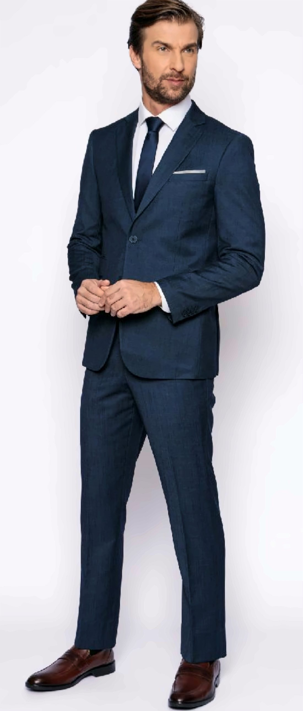
Ref. 1909-06 Fio Tinto Marinho 84% Poliéster · 15% Viscose · 1% Elastano Tamanhos 44 ao 70
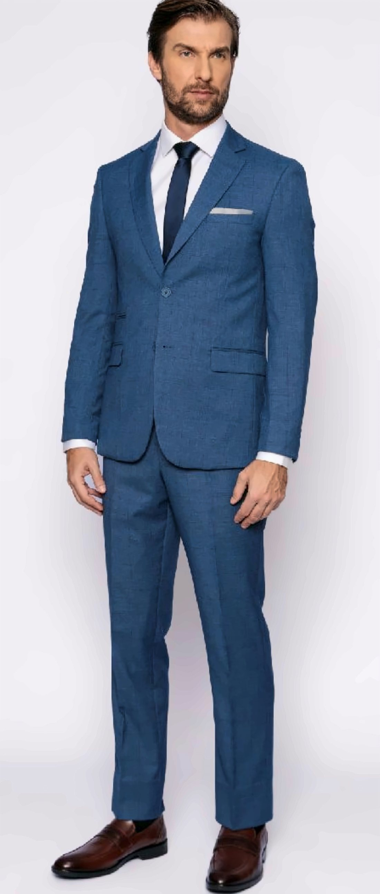
Ref. 1909-07 Fio Tinto Azul 84% Poliéster · 15% Viscose · 1% Elastano Tamanhos 44 ao 70
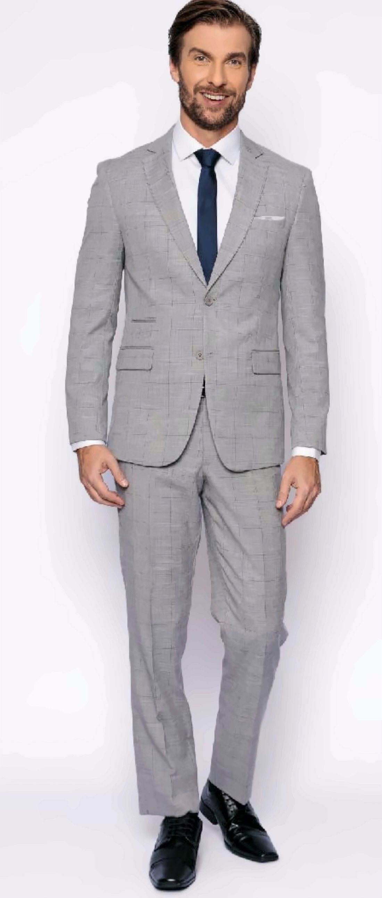
Ref. 1909-08 Fio Tinto Cinza 84% Poliéster · 15% Viscose · 1% Elastano Tamanhos 44 ao 70
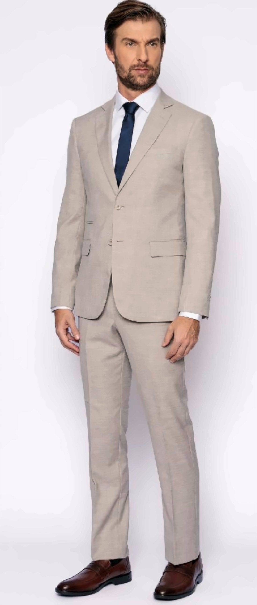
Ref. 1909-09 Fio Tinto Bege 85% Poliéster · 14% Viscose · 1% Elastano Tamanhos 44 ao 70
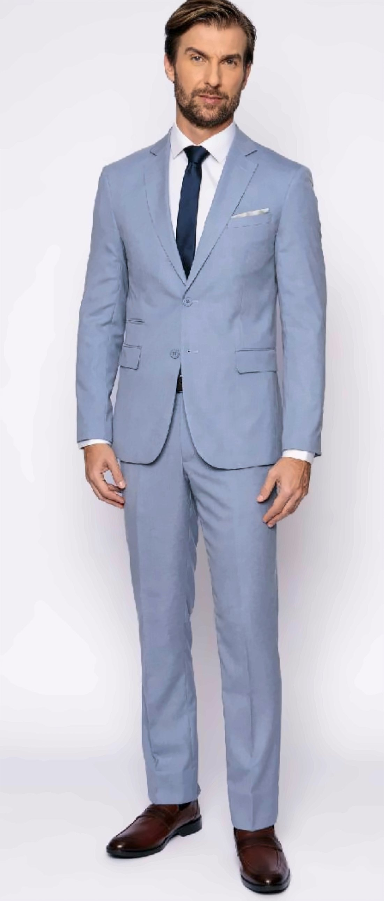
Ref. 1909-10 Fio Tinto Azul Claro 82% Poliéster · 17% Viscose · 1% Elastano Tamanhos 44 ao 70
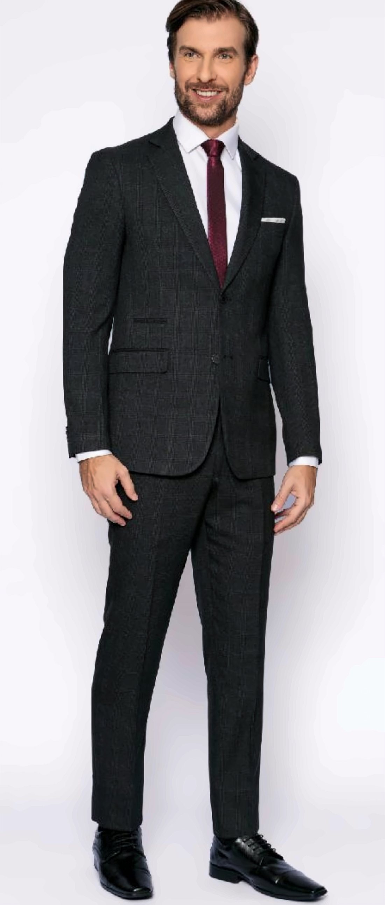
Ref. 1909-11 Fio Tinto Chumbo 68% Poliéster · 30% Viscose · 2% Elastano Tamanhos 44 ao 70
Linha Elastano Liso
O clássico sob medida, sem textura aparente
Tecido PV Elastano liso — acabamento uniforme e discreto, a base mais versátil para cerimônia, trabalho ou uso diário. Disponível também em colete no mesmo tecido.
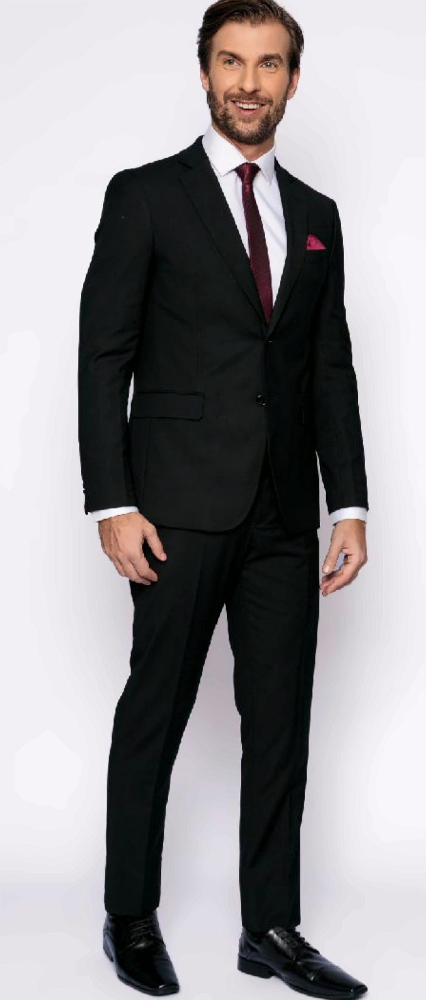
Ref. 1783 Liso Preto 78% Poliéster · 20% Viscose · 2% Elastano Tamanhos 44 ao 70 · calça avulsa disponível
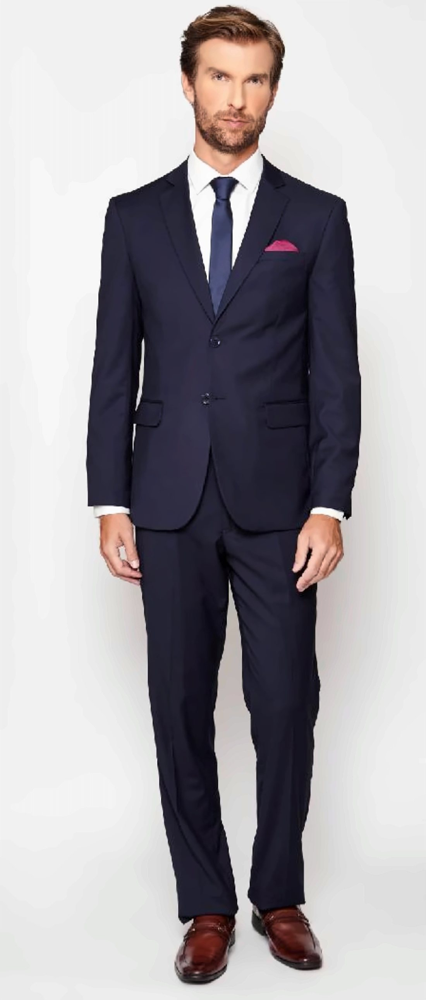
Ref. 1783 Liso Marinho 78% Poliéster · 20% Viscose · 2% Elastano Tamanhos 44 ao 70
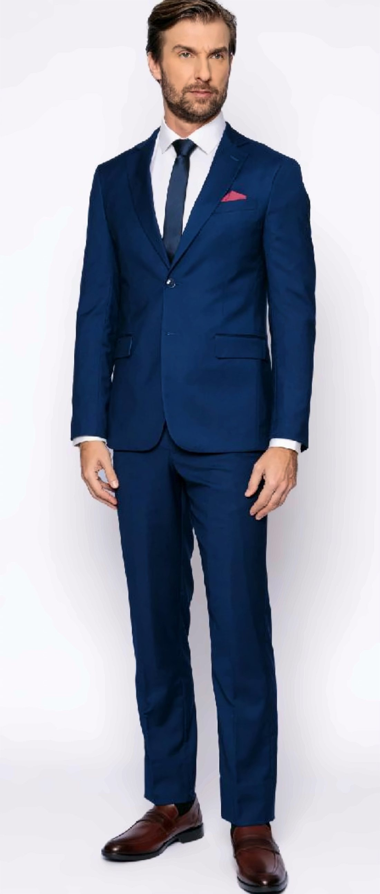
Ref. 1783 Liso Azul Royal 78% Poliéster · 20% Viscose · 2% Elastano Tamanhos 44 ao 70
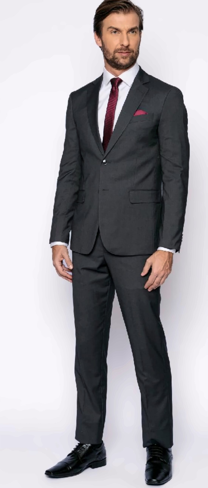
Ref. 1783 Liso Chumbo 78% Poliéster · 20% Viscose · 2% Elastano Tamanhos 44 ao 70
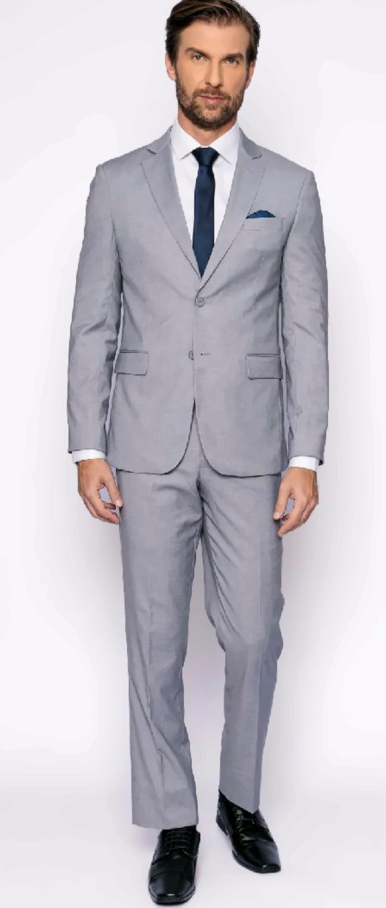
Ref. 1783 Liso Cinza Claro 78% Poliéster · 20% Viscose · 2% Elastano Tamanhos 44 ao 70
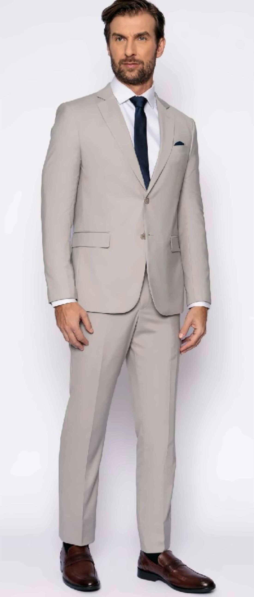
Ref. 1783 Liso Areia 78% Poliéster · 20% Viscose · 2% Elastano Tamanhos 44 ao 70
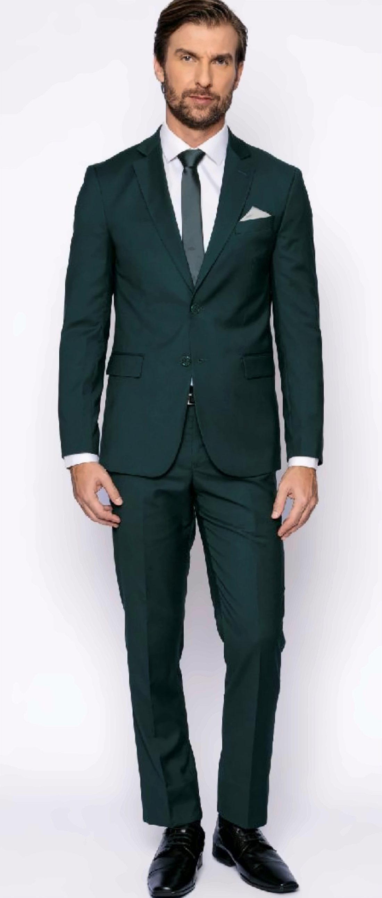
Ref. 1783 Liso Verde 78% Poliéster · 20% Viscose · 2% Elastano Tamanhos 44 ao 58
Linha Oxford
Tecido 100% poliéster, resistência no dia a dia
Trama Oxford — mais firme e durável, ideal para quem usa o terno com frequência e precisa de uma peça que aguenta a rotina sem perder o caimento.
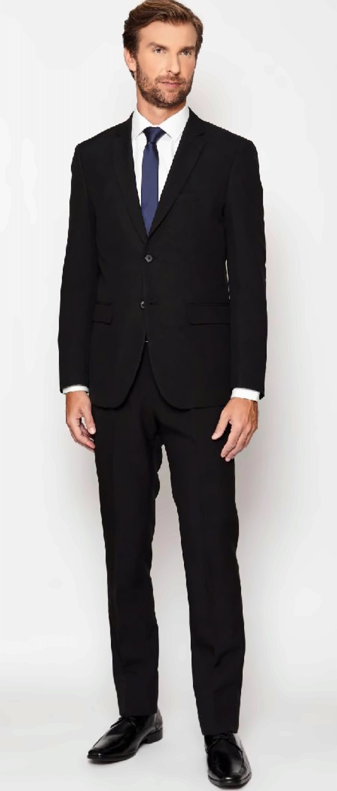
Ref. 1792 Oxford Preto 100% Poliéster Tamanhos 44 ao 66
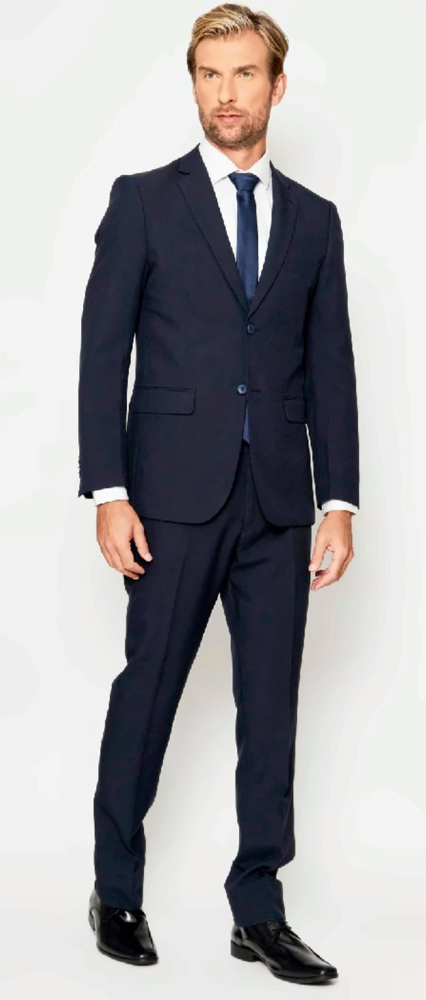
Ref. 1792 Oxford Marinho 100% Poliéster Tamanhos 44 ao 66
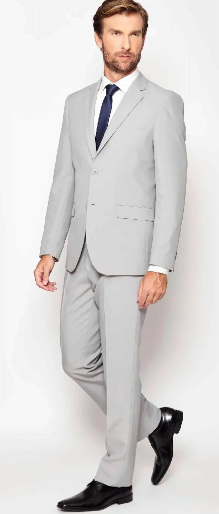
Ref. 1792 Oxford Cinza Claro 100% Poliéster Tamanhos 44 ao 66
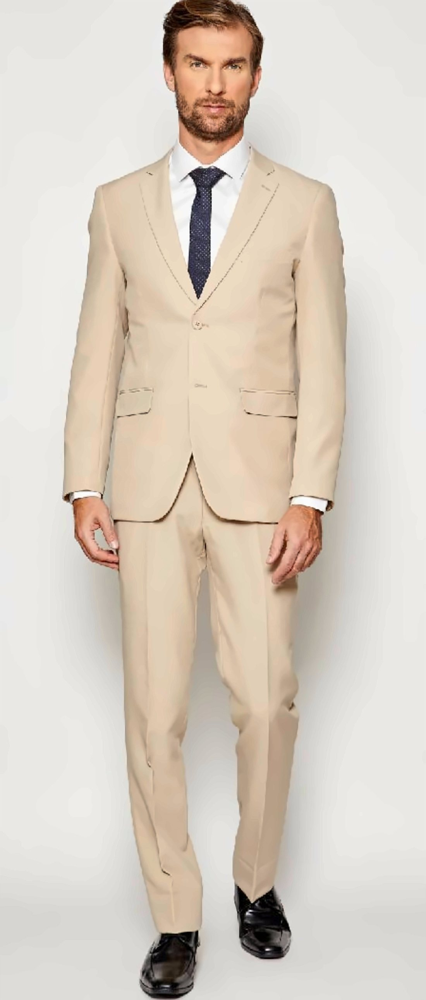
Ref. 1792 Oxford Areia 100% Poliéster Tamanhos 44 ao 66
Linha Tropical
Leveza para o calor carioca
Mistura de lã com poliéster em trama mais aberta e respirável — feito para manter o caimento formal sem pesar no dia quente.
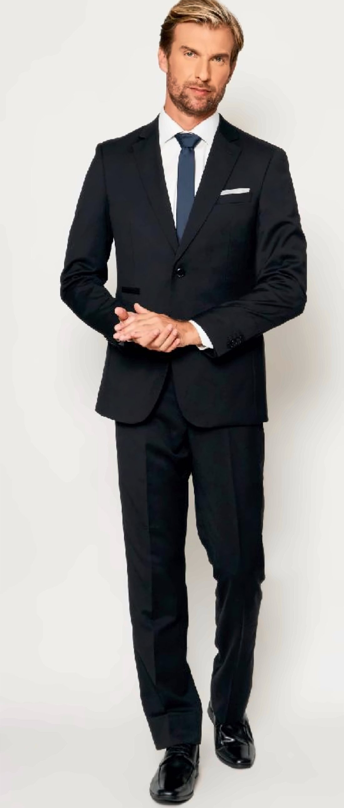
Ref. 1777-01 Tropical Preto 70% Poliéster · 30% Lã Tamanhos 46 ao 60
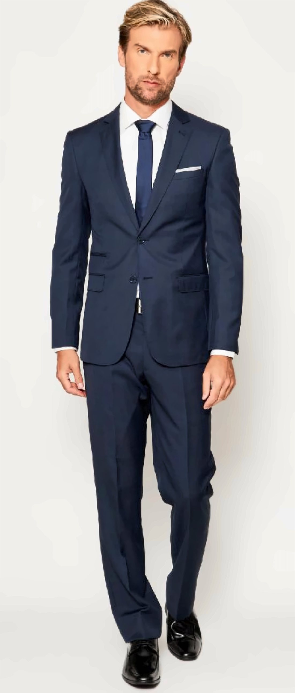
Ref. 1777-06 Tropical Marinho 50% Poliéster · 50% Lã Tamanhos 46 ao 60
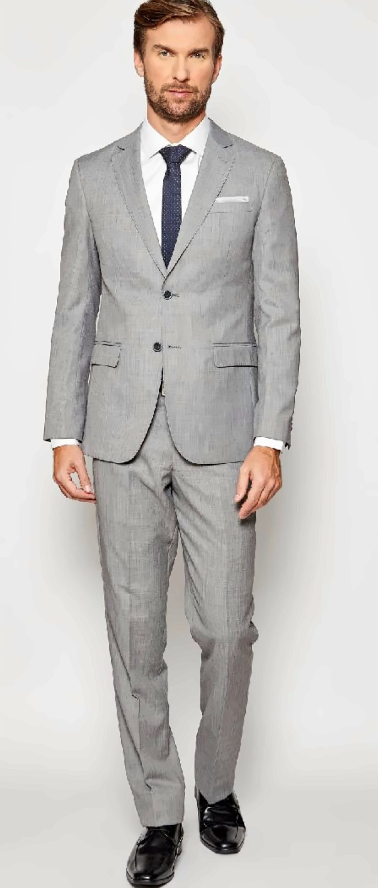
Ref. 1777-09 Tropical Cinza Claro 70% Poliéster · 30% Lã Tamanhos 46 ao 60
Linha Lã
O tecido nobre da alfaiataria clássica
Lã pura ou em mistura predominante — caimento superior e durabilidade, para quem busca a peça mais tradicional do guarda-roupa formal.
Ref. 1795-01 Lã Preto 100% Lã Tamanhos 46 ao 60
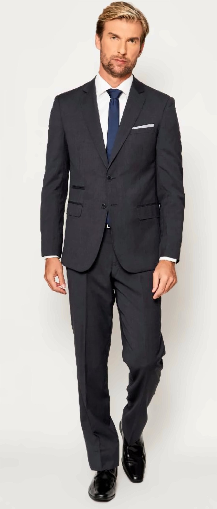
Ref. 1795-03 Lã Chumbo 100% Lã Tamanhos 46 ao 60
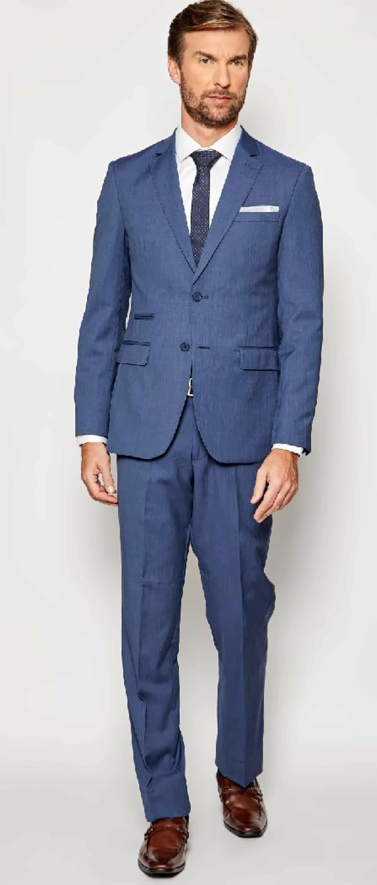
Ref. 1795-04 Lã Azul 70% Lã · 30% Poliéster Tamanhos 46 ao 60